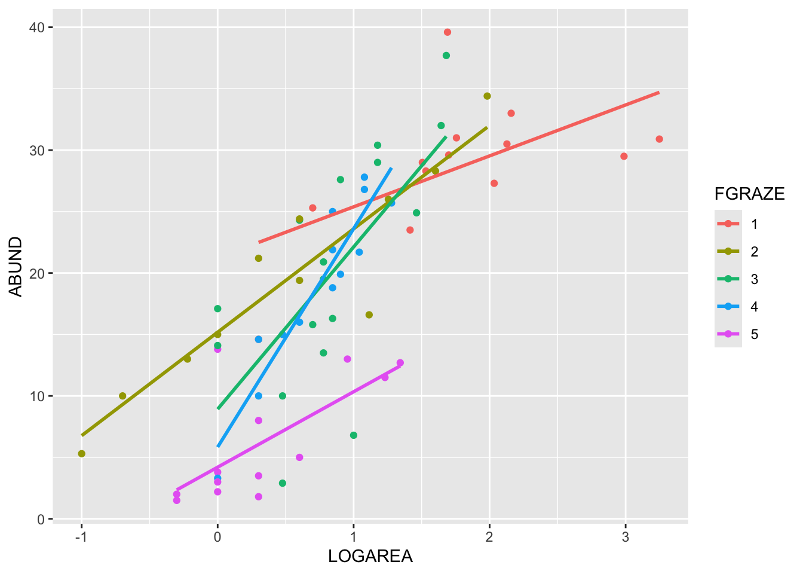

Exercises
Linear model with an interaction between a continuous and a categorical variable
This exercise builds on the previous exercises where you fitted a
linear model with either a single continuous explanatory variable or a
single categorical explanatory variable. In this exercise you will fit a
model with both a continuous and categorical explanatory variable and
allow their effects to interact (i.e. the effect of one explanatory
variable on the response variable changes with the value of the another
explanatory variable). This is the third of four complementary
exercises, based on the loyn data set.
1. As in previous exercises, either create a new R script (perhaps
call it linear_model_3) or continue with your previous R script in your
RStudio Project. Again, make sure you include any metadata you feel is
appropriate (title, description of task, date of creation etc) and don’t
forget to comment out your metadata with a # at the
beginning of the line.
2. Import the data file ‘loyn.txt’ into R and take a look at the
structure of this dataframe using the str() function. We
know that the abundance of birds ABUND increases with the
log10 transformed area of the forest patch
(LOGAREA variable). We also know that bird abundance
changes with the grazing intensity (FGRAZE variable) with
forest patches with higher grazing intensity having fewer birds on
average. But how do these effects combine together? Would a small patch
with low grazing intensity have more birds than a larger patch with high
grazing intensity? Could the fit of the ABUND ~ LOGAREA
model for the large patches be improved if we accounted for grazing
intensity in the patches?
3. As previously we want to treat AREA as a
log10-transformed area to limit the influence of the couple
of disproportionately large patches, and GRAZE as a
categorical variable with five levels. So the first thing we need to do
is create the corresponding variables in the loyn
dataframe, called LOGAREA and FGRAZE.
4. Explore the relationship between bird abundance and log
transformed forest patch area for each level of grazing. You could
manually create a separate plot for each graze level but it’s more
efficient to use a conditional scatter plot (aka coplot, see section
4.2.6 of the R book or the help page for the function
coplot()). A coplot lets you visualise the relationship
between ABUND and LOGAREA for each level of
FGRAZE, with FGRAZE levels increasing from the
bottom-left panel (Graze level 1) to the top-right panel (Graze level
5). What patterns do you see? Is it okay to assume that the relationship
between ABUND and LOGAREA is the same for all
grazing levels or does the relationship change? This is effectively
asking if the slopes of the relationship between ABUND and
LOGAREA are different for each FGRAZE level -
this is called an interaction.
5. Fit an appropriate linear model in R to explain the variation in
the response variable ABUND with the explanatory variables
LOGAREA and FGRAZE. Also include the
interaction between LOGAREA and FGRAZE. Hint:
: is the interaction symbol! Remember to use the
data = argument. Assign this linear model to an
appropriately named object, like birds.inter.1. Optional:
Can you remember how to specify the model using the ‘shortcut’ version
(with *) instead?
6. As conscientious modellers, let’s first check the assumptions of
our linear model by creating plots of the residuals. Remember, that you
can split your plotting device into 2 rows and 2 columns using the
par() function before you create the plots. Check each of
the assumptions using these plots and report whether your model meets
these assumptions.
7. Use the anova() function to produce the ANOVA table
of your linear model. Remember, this ANOVA table is based on sequential
sums of squares (the order of the explanatory variables matters). The
only P value that we should interpret is the one that occurs in the
second to last row of the table (the one above ‘Residuals’). This is the
interaction term between FGRAZE and LOGAREA
(FGRAZE:LOGAREA). What is the null hypothesis associated
with this interaction term? Do we reject or fail to reject this
hypothesis? What is the biological interpretation of this interaction
term? Can we say anything about the hypotheses for the main effects of
FGRAZE or LOGAREA?
8. OK, now for the part you all know and love! Use the
summary() function on your model object to produce the
table of parameter estimates. Using this output, take each line in turn
and answer the following questions: (A) what does this parameter
estimate? (B) What is the biological interpretation of the corresponding
estimate? (C) What is the null hypothesis associated with it? (D) Do you
reject or fail to reject this hypothesis? Also compare the multiple
R2 from this model the models you created in the previous two
exercises. I encourage you to get someone to discuss your answers with
you if you are confused :).
9. Right, now hang onto your hat! Let’s plot the predictions from
your model to figure out how it really fits the data (and help us
understand the output from the summary() function :).
Here’s a general recipe, using the predict() function.
- plot the raw data, using a different colour for points from each
FGRAZElevel - for each
FGRAZElevel in turn: - create a sequence of
LOGAREAfrom the minimum value to the maximum within the grazing level (unless you wish to predict outside the range of observed values, probably best not too!). - store it in a data frame (e.g.
dat4pred) containing the variablesFGRAZEandLOGAREA.Remember thatFGRAZEis a factor, so its value need to be placed in quotes. - Create a vector of predicted bird abundances using our new dataframe
using the
predict()function. - Add the predicted to your plot using the
lines()function with the appropriate colours.
See the script below, for one of many ways of doing this. Now this might seem like a huge amount of code just to plot your predicted values (and admittedly it is!) but most of the code is just repeated for each level of graze. Just work through it slowly and logically and hopefully it will make sense (please ask if you are confused). I will also show you some alternative (easier?) ways to do this below.
par(mfrow= c(1, 1))
plot(ABUND ~ LOGAREA, data = loyn, col = GRAZE, pch = 16)
# Note: # colour 1 means black in R
# colour 2 means red in R
# colour 3 means green in R
# colour 4 means blue in R
# colour 5 means cyan in R
# FGRAZE1
# create a sequence of increasing LOGAREA within the observed range
LOGAREA.seq <- seq(from = min(loyn$LOGAREA[loyn$FGRAZE == 1]),
to = max(loyn$LOGAREA[loyn$FGRAZE == 1]),
length = 20)
# create data frame for prediction
dat4pred <- data.frame(FGRAZE = "1", LOGAREA = LOGAREA.seq)
# predict for new data
dat4pred$predicted <- predict(birds.inter.1, newdata = dat4pred)
# add the predictions to the plot of the data
lines(predicted ~ LOGAREA, data = dat4pred, col = 1, lwd = 2)
# FGRAZE2
LOGAREA.seq <- seq(from = min(loyn$LOGAREA[loyn$FGRAZE == 2]),
to = max(loyn$LOGAREA[loyn$FGRAZE == 2]),
length = 20)
dat4pred <- data.frame(FGRAZE = "2", LOGAREA = LOGAREA.seq)
dat4pred$predicted <- predict(birds.inter.1, newdata = dat4pred)
lines(predicted ~ LOGAREA, data = dat4pred, col = 2, lwd = 2)
# FGRAZE3
LOGAREA.seq <- seq(from = min(loyn$LOGAREA[loyn$FGRAZE == 3]),
to = max(loyn$LOGAREA[loyn$FGRAZE == 3]),
length = 20)
dat4pred <- data.frame(FGRAZE = "3", LOGAREA = LOGAREA.seq)
dat4pred$predicted <- predict(birds.inter.1, newdata = dat4pred)
lines(predicted ~ LOGAREA, data = dat4pred, col = 3, lwd = 2)
# FGRAZE4
LOGAREA.seq <- seq(from = min(loyn$LOGAREA[loyn$FGRAZE == 4]),
to = max(loyn$LOGAREA[loyn$FGRAZE == 4]),
length = 20)
dat4pred <- data.frame(FGRAZE = "4", LOGAREA = LOGAREA.seq)
dat4pred$predicted <- predict(birds.inter.1, newdata = dat4pred)
lines(predicted ~ LOGAREA, data = dat4pred, col = 4, lwd = 2)
# FGRAZE5
LOGAREA.seq <- seq(from = min(loyn$LOGAREA[loyn$FGRAZE == 5]),
to = max(loyn$LOGAREA[loyn$FGRAZE == 5]),
length = 20)
dat4pred <- data.frame(FGRAZE = "5", LOGAREA = LOGAREA.seq)
dat4pred$predicted <- predict(birds.inter.1, newdata = dat4pred)
lines(predicted ~ LOGAREA, data = dat4pred, col = 5, lwd = 2)
legend("topleft",
legend = paste("Graze = ", 5:1),
col = c(5:1), bty = "n",
lty = c(1, 1, 1),
lwd = c(1, 1, 1))
(Optional, for the geeks) Alternative method, using a loop. Just keep this code in case you ever want to do something like this in the future.
# Okay, that was a long-winded way of doing this.
# If, like me, you prefer more compact code and less risks of errors,
# you can use a loop, to save repeating the sequence 5 times:
par(mfrow = c(1, 1))
plot(ABUND ~ LOGAREA, data = loyn, col = GRAZE, pch = 16)
for(g in levels(loyn$FGRAZE)){ # g will take the values "1", "2",..., "5" in turn
LOGAREA.seq <- seq(from = min(loyn$LOGAREA[loyn$FGRAZE == g]),
to = max(loyn$LOGAREA[loyn$FGRAZE == g]),
length = 20)
dat4pred <- data.frame(FGRAZE = g, LOGAREA = LOGAREA.seq)
dat4pred$predicted <- predict(birds.inter.1, newdata = dat4pred)
lines(predicted ~ LOGAREA, data = dat4pred, col = as.numeric(g), lwd = 2)
}
legend("topleft",
legend = paste("Graze = ", 5:1),
col = c(5:1), bty= "n",
lty = c(1, 1, 1),
lwd = c(1, 1, 1))
(Optional, for the lazy!) And, if you want an even
easier way, then we can use the ggolot2 package. Note: you
will need to install the ggplot2 package first if you don’t
already have it.
# install.packages('ggplot2', dep = TRUE)
library(ggplot2)
ggplot(loyn, aes(x = LOGAREA, y = ABUND, colour = FGRAZE) ) +
geom_point() +
geom_smooth(method = "lm", se = FALSE)
End of the Linear model with continuous and categorical explanatory variables exercise